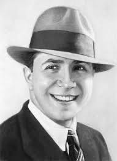

Beethoven nació en 1770 en Bonn, Alemania. Desde niño mostró un gran talento musical, pero su infancia fue difícil debido a un padre alcohólico que lo obligaba a practicar.
A pesar de perder la audición progresivamente, compuso algunas de las obras más influyentes de la historia, incluyendo la Novena Sinfonía con la "Oda a la Alegría".
Compuso nueve sinfonías y 32 sonatas para piano.
Se dice que rompía las teclas del piano debido a su intensidad al tocar.
Fue alumno de Joseph Haydn.
Escribió cartas apasionadas a una "Amada Inmortal", cuya identidad sigue siendo un misterio.
Su obra "Claro de Luna" es una de las piezas más interpretadas en el mundo.
Jazz: Louis Armstrong
Nacido en 1901 en Nueva Orleans, Armstrong creció en un entorno humilde y aprendió a tocar la trompeta en un hogar para niños desfavorecidos.
Se convirtió en una de las figuras más influyentes del jazz, popularizando la improvisación instrumental y el canto scat.
Fue apodado "Satchmo", abreviatura de "Satchel Mouth".
Su canción "What a Wonderful World" es una de las más reconocidas globalmente.
Actuó en más de 30 películas.
Fue el primer artista afroamericano en recibir un crédito en una película de Hollywood.
Recibió la Medalla Presidencial de la Libertad en 1977, póstumamente.
Salsa: Héctor Lavoe
Héctor Juan Pérez Martínez, conocido como Héctor Lavoe, nació en 1946 en Puerto Rico. A los 17 años se mudó a Nueva York para seguir su carrera musical.
Fue la voz de la salsa con éxitos como "Periódico de Ayer" y "El Cantante", aunque su vida estuvo marcada por tragedias personales.
Colaboró estrechamente con Willie Colón, formando un dúo icónico.
Su apodo "El Cantante de los Cantantes" fue dado por Rubén Blades.
Sufrió la pérdida de su hijo en un accidente trágico.
Su vida inspiró la película "El Cantante" protagonizada por Marc Anthony.
A pesar de su vida turbulenta, dejó un legado que sigue vigente en la salsa.
Tango: Carlos Gardel

Carlos Gardel nació en 1890 y es considerado el mayor exponente del tango. Se cree que nació en Francia, pero fue en Argentina donde se convirtió en una leyenda.
Su música y su imagen se volvieron icónicas en todo el mundo, llevando el tango a la fama internacional.
Grabó más de 900 canciones.
Su muerte en un accidente aéreo en 1935 lo convirtió en una leyenda.
Popularizó el tango con su voz melodiosa y sus interpretaciones dramáticas.
Actuó en varias películas, promoviendo el tango globalmente.
Su frase "Gardel canta cada día mejor" es un dicho popular en Argentina.
Síguenos
Teléfono: 1100-11111 Dirección: Calle 15 sur #45-32 Email: bondiacademy@school.co